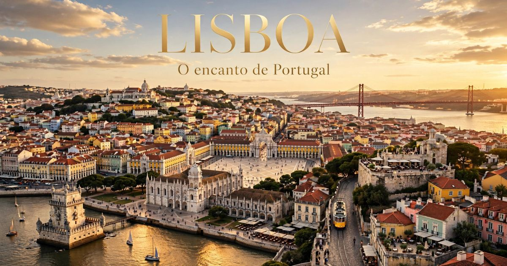

Lisboa 2026: guia completo para viajar para a capital de Portugal
Introdução: a cidade das sete colinas
Lisboa é, sem dúvida, uma das cidades mais encantadoras e acolhedoras da Europa. Capital de Portugal, a cidade combina história, cultura, gastronomia e uma atmosfera única que cativa visitantes de todos os cantos do mundo. Seja para explorar as ruas de paralelepípedos do bairro de Alfama, andar no emblemático elétrico 28, provar os famosos pastéis de nata ou simplesmente apreciar a vista de um dos muitos miradouros, Lisboa oferece experiências inesquecíveis para todos os perfis de viajantes.
Em 2026, Lisboa continua sendo um dos destinos preferidos dos viajantes brasileiros. A cidade se prepara para receber turistas do mundo inteiro com uma infraestrutura cada vez mais moderna, mantendo seu charme histórico e sua essência única. Com a crescente popularidade de Portugal como destino turístico, a cidade tem investido em iniciativas para tornar a experiência do visitante ainda mais agradável.
Neste guia completo sobre Lisboa, você vai encontrar tudo o que precisa saber para planejar sua viagem: a melhor época para visitar, as atrações imperdíveis, os melhores bairros para se hospedar, como se locomover pela cidade, dicas de gastronomia, compras e muito mais.
Nosso objetivo é que você chegue a Lisboa preparado para aproveitar ao máximo cada minuto nessa cidade fascinante. Afinal, Lisboa é mais do que um destino — é uma experiência que combina história, cultura, gastronomia e a calorosa hospitalidade portuguesa em um só lugar.

A deslumbrante vista de Lisboa, com o Castelo de São Jorge e o Rio Tejo
Melhor época para visitar Lisboa
Lisboa tem um clima mediterrâneo, com verões quentes e invernos amenos. A escolha da melhor época depende do que você busca na viagem.
Primavera (março a maio) — Uma das melhores épocas para visitar Lisboa. As temperaturas são agradáveis (entre 15°C e 25°C), as flores desabrocham nos jardins da cidade e os dias ficam mais longos. A cidade ganha vida após o inverno, com uma atmosfera vibrante e colorida. Os preços dos hotéis são moderados, com exceção da Páscoa.
Verão (junho a agosto) — Época mais quente do ano, com temperaturas que podem ultrapassar 30°C. A cidade fica cheia de turistas, os preços são mais altos e as filas nas atrações são longas. No entanto, o verão oferece uma programação intensa de festas populares (como os Santos Populares em junho), noites quentes e a oportunidade de aproveitar as praias próximas. É a época mais animada da cidade.
Outono (setembro a novembro) — Muitos consideram o outono a melhor estação para visitar Lisboa. As temperaturas são agradáveis (entre 15°C e 25°C), o sol ainda está presente, e a cidade oferece uma atmosfera charmosa e relaxada. A alta temporada começa a diminuir após setembro, com preços mais acessíveis. É a época da colheita e dos festivais de vinho.
Inverno (dezembro a fevereiro) — O inverno em Lisboa é ameno, com temperaturas entre 8°C e 15°C. A cidade se enche de luzes de Natal e decorações especiais. É uma época mais tranquila, com menos turistas e preços mais baixos. Para quem não gosta de calor, esta é a melhor época.
Dica: Se você busca um equilíbrio entre clima agradável e preços razoáveis, a primavera (abril/maio) e o outono (setembro/outubro) são as melhores escolhas. Evite os meses de junho e julho (alta temporada de férias) se quiser economizar.
O que fazer em Lisboa: atrações imperdíveis
Lisboa tem uma lista quase infinita de atrações. Separamos as imperdíveis para que você não perca nada:
Torre de Belém — O monumento mais famoso de Lisboa e símbolo da era dos Descobrimentos. A torre é uma fortificação do século XVI, localizada na foz do Rio Tejo. A visita à torre é uma viagem no tempo para a história de Portugal. A vista do rio é espetacular.
Mosteiro dos Jerónimos — O mosteiro mais importante de Portugal, um dos mais belos exemplos da arquitetura manuelina. O mosteiro é Patrimônio Mundial da UNESCO e abriga o túmulo de Vasco da Gama. A visita é obrigatória para os amantes de história e arquitetura.
Castelo de São Jorge — O castelo que domina a cidade de Lisboa, com uma vista panorâmica deslumbrante. O castelo é uma fortificação do século XI, com ruínas arqueológicas, jardins e uma vista incrível da cidade e do Rio Tejo.
Elétrico 28 — O famoso bonde amarelo que atravessa os bairros mais charmosos de Lisboa. O trajeto passa por Alfama, Graça, Baixa e Estrela, oferecendo uma experiência autêntica e pitoresca. Pegue o elétrico no início da linha para garantir um lugar.
Bairro de Alfama — O bairro mais antigo e charmoso de Lisboa, com ruas estreitas e sinuosas, casas típicas e uma atmosfera única. É o coração do Fado, a música tradicional portuguesa. Explore as ruas, visite a Catedral de Lisboa e ouça Fado em uma casa típica.
Miradouros (vistas panorâmicas) — Lisboa é a cidade das sete colinas, e os miradouros oferecem vistas espetaculares. Não perca o Miradouro de Santa Luzia, o Miradouro da Senhora do Monte e o Miradouro de São Pedro de Alcântara. A vista do pôr do sol é especialmente bonita.
Padrão dos Descobrimentos — O monumento que celebra os navegadores portugueses, localizado em Belém. O monumento tem uma vista panorâmica do rio e é uma homenagem à era dos Descobrimentos.
Mercado da Ribeira (Time Out Market) — O mercado gastronômico mais famoso de Lisboa, com opções de todos os tipos. O mercado reúne os melhores chefs e restaurantes da cidade, oferecendo uma experiência gastronômica única.
Sintra — A cidade dos palácios, localizada a 30 minutos de trem de Lisboa. Visite o Palácio da Pena, o Castelo dos Mouros, o Palácio de Monserrate e a Quinta da Regaleira. Sintra é um Patrimônio Mundial da UNESCO e uma das atrações mais bonitas de Portugal.
Onde ficar em Lisboa: melhores bairros
Escolher onde se hospedar é uma das decisões mais importantes da viagem. Cada bairro de Lisboa tem sua personalidade:
Baixa e Chiado — O centro histórico de Lisboa, com ruas elegantes, lojas, cafés e teatros. Ficar aqui significa estar no coração da cidade, perto das principais atrações. Os preços são variados.
Alfama — O bairro mais antigo e charmoso de Lisboa, com ruas estreitas, casas típicas e uma atmosfera autêntica. Ficar aqui significa estar imerso na história e na cultura portuguesa. Os preços são moderados.
Bairro Alto — O bairro da vida noturna de Lisboa, com bares, restaurantes e uma atmosfera vibrante. Ficar aqui significa estar perto da animação noturna. Os preços são variados.
Belém — O bairro histórico de Lisboa, com monumentos e museus. Ficar aqui significa estar perto da Torre de Belém e do Mosteiro dos Jerónimos. Os preços são moderados.
Parque das Nações — O bairro moderno de Lisboa, com arquitetura contemporânea e o Oceanário. Ficar aqui significa estar perto de atrações modernas e da margem do rio. Os preços são variados.
Dica: Para quem visita Lisboa pela primeira vez, Baixa/Chiado é a melhor opção pela localização central. Para quem busca autenticidade, Alfama é a melhor escolha.
Como chegar a Lisboa
Chegar a Lisboa é fácil, com voos diretos do Brasil e conexões eficientes.
Avião — Aeroporto:
- Aeroporto Humberto Delgado (LIS) — O principal aeroporto internacional de Lisboa. Recebe voos diretos do Brasil (São Paulo, Rio de Janeiro, Belo Horizonte, etc.) com companhias como TAP, LATAM, Azul e outras. Fica a cerca de 7 km do centro e tem excelentes conexões de metrô e ônibus.
Como ir do aeroporto ao centro:
- Metrô: Linha Vermelha para o centro (€ 1,80, 20 min).
- Ônibus: Carris (€ 1,80, 30 min) ou Aerobus (€ 4,00).
- Táxi: Cerca de € 10-15.
Visto e documentação: Brasileiros não precisam de visto para entrada em Portugal para turismo (até 90 dias). A partir de 2025, o sistema ETIAS pode ser exigido. Brasileiros com cidadania portuguesa podem usar o passaporte europeu.
Transporte em Lisboa: como se locomover
Lisboa tem uma boa rede de transporte público, mas a cidade também é muito agradável para explorar a pé.
Metrô:
- 4 linhas cobrem as principais áreas da cidade e arredores.
- Funciona das 6h30 à 1h.
- Tarifa: € 1,80 por viagem (bilhete simples).
- Use o cartão Viva Viagem (cartão recarregável) para economizar.
Elétricos (bondes):
- Os famosos elétricos amarelos de Lisboa, como o 28 e o 15.
- Tarifa: € 3,00 por viagem (bilhete simples).
- Use o cartão Viva Viagem para pagar.
Ônibus:
- Ampla rede de ônibus cobre toda a cidade.
- Tarifa: € 2,00 por viagem.
Elevadores e funiculares:
- Os famosos elevadores de Lisboa, como o Elevador de Santa Justa e o Elevador da Glória.
- Tarifa: € 3,80 por viagem.
Táxis:
- Tarifa inicial: € 3,25 + € 0,50 por km.
- Uber disponível na cidade.
Dica: Lisboa é uma cidade muito caminhável. Muitas atrações ficam a uma curta distância umas das outras. No entanto, as colinas podem ser desafiantes. Use os elevadores e funiculares para facilitar o deslocamento.
Gastronomia em Lisboa: o que comer
Lisboa é a capital da gastronomia portuguesa. Confira o que não perder:
Pastel de Nata — O doce mais famoso de Portugal. São pastéis de nata cremosos, com massa folhada crocante. Experimente na Fábrica da Nata, na Pastelaria de Belém (os originais) ou em qualquer padaria da cidade.
Bacalhau — O peixe mais famoso de Portugal, preparado de inúmeras maneiras (à Brás, com natas, à Gomes de Sá, etc.). Experimente em qualquer restaurante típico.
Sardinhas assadas — Uma tradição portuguesa, especialmente durante os Santos Populares (junho). As sardinhas são assadas na brasa e servidas com pão e vinho.
Ginjinha — A bebida típica de Lisboa, um licor de ginja (cereja) servido em copos de chocolate. Experimente na famosa Ginjinha Sem Rival.
Mercados gastronômicos:
- Mercado da Ribeira (Time Out Market): O mercado gastronômico mais famoso de Lisboa, com chefs renomados.
- Mercado de Campo de Ourique: Mercado coberto com opções gastronômicas.
Compras em Lisboa: o que levar para casa
Lisboa é um paraíso para as compras, com opções para todos os gostos.
Rua Augusta: A rua principal da Baixa, com lojas de moda, calçados e souvenirs.
Chiado: Bairro com lojas elegantes e marcas internacionais.
LX Factory: Centro criativo com lojas conceito, design e arte.
Souvenirs:
- Miniaturas de azulejos e cerâmicas
- Chaveiros e imãs com símbolos de Lisboa
- Produtos gastronômicos (pasteis de nata, azeite, vinho do Porto)
- Cerâmicas e azulejos portugueses
- Camisetas com estampas de Lisboa
- Galos de Barcelos
Dicas de economia em Lisboa
- Compre o Lisboa Card — O passaporte turístico inclui entrada para atrações e transporte público ilimitado. Pode gerar uma economia significativa.
- Use o cartão Viva Viagem — O cartão recarregável para transporte público oferece tarifas mais baixas que os bilhetes avulsos.
- Alimente-se em mercados e tascas — Em vez de restaurantes caros, experimente os mercados e as tascas para uma refeição autêntica e econômica.
- Visite museus em dias gratuitos — O primeiro domingo de cada mês, muitos museus têm entrada gratuita.
- Caminhe pela cidade — Lisboa é uma cidade muito caminhável, especialmente na Baixa e no Chiado.
Lisboa é uma cidade que combina história, cultura, gastronomia e hospitalidade de forma única! Compre o Lisboa Card para economizar nas atrações e no transporte, não deixe de provar os pastéis de nata e explore os bairros históricos a pé. E o mais importante: aproveite a luz dourada de Lisboa — os pores do sol na cidade são de tirar o fôlego!
❓ Perguntas Frequentes sobre Lisboa
Recomenda-se pelo menos 5 a 7 dias para explorar Lisboa com calma. Com 5 dias, você consegue visitar as principais atrações da cidade. Com 7 dias, pode incluir uma excursão para Sintra, Cascais ou Estoril.
A primavera (abril/maio) e o outono (setembro/outubro) são as melhores épocas, com temperaturas agradáveis. O verão é quente e lotado. O inverno é ameno e mais tranquilo.
Não. Cidadãos brasileiros não precisam de visto para turismo em Portugal (até 90 dias). Brasileiros com cidadania portuguesa podem usar o passaporte europeu. A partir de 2025, o sistema ETIAS pode ser exigido.
Uma viagem de 7 dias para Lisboa custa entre R$ 6.000 e R$ 15.000 (incluindo passagens, hospedagem, alimentação e atrações). É um dos destinos mais acessíveis da Europa.
Dia 1: Torre de Belém, Mosteiro dos Jerónimos, Padrão dos Descobrimentos; Dia 2: Castelo de São Jorge, Alfama, Elétrico 28, Miradouros; Dia 3: Baixa, Chiado, Mercado da Ribeira, Bairro Alto.
Sim. Lisboa é uma cidade segura para turistas. Cuidado apenas com furtos em locais turísticos e no transporte público.
A melhor forma é combinar caminhadas (pela Baixa e Chiado) com o uso de metrô, elétricos e elevadores para as colinas. O cartão Viva Viagem é a forma mais econômica de pagar o transporte.
No verão: roupas leves, protetor solar, chapéu. No inverno: casaco leve. Calçados confortáveis para caminhar nas colinas. Adaptador de tomada (tipo F). Não esqueça um casaco para a noite, mesmo no verão.